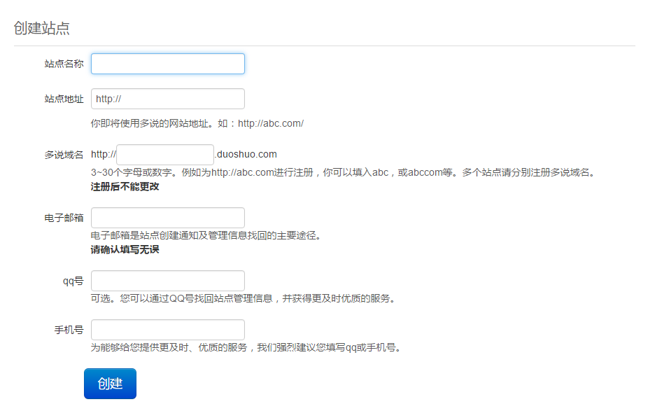
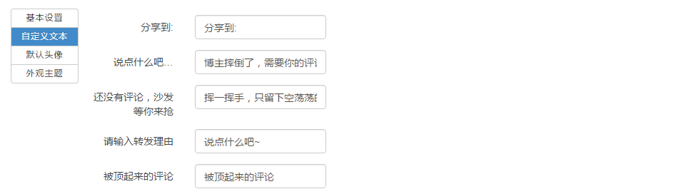
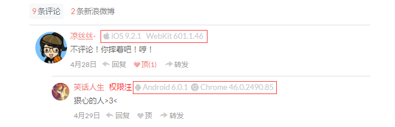
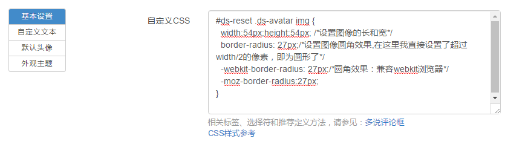

多说简介
多说是一款追求极致体验的社会化评论框，可以用微博、QQ、人人、豆瓣等帐号登录并评论。功能强大且永久免费。Hexo 默认使用的评论插件是国外的 Disqus，。对于国内来说，使用多说无非是最好的。这篇文章就介绍下如何在 Hexo 中添加多说评论插件和多说 CSS 的美化，顺便说一下多说分享插件。至于如何搭建 Hexo 博客请参考：
集成多说
注意: 我使用的是 Next 主题，集成多说插件非常简单，这也是我喜欢这个主题的原因，简单、高效。其他主题的配置需要你们自己研究了，不过都差不多的。Next 主题更多第三方服务请参考：
Next 主题
下面说一下 Next 主题如何集成多说。首先要在 多说 创建一个站点，具体步骤如下：
- 登录后在首页选择 “我要安装”。
- 创建站点，填写表单。如图：
 - 在博客站点配置文件
_config.yml中添加如下代码：1
2
3
4
5# 多说评论功能
duoshuo_shortname: xxx # 你填写在多说域名中的值
# 多说分享服务，必须与多说评论同时使用
duoshuo_share: true - 启用后默认在所有页面都会显示多说评论框，比如分类页面、标签页面、自定义的关于页面，如果不想在这些页面显示评论框，找到对应的
index.md文档，在Front-matter(文件最上方以---分隔的区域)中加入comments: false这一行代码就行了
Landscape 主题
顺便说一下 Hexo 默认的 Landscape 主题如何集成多说，具体步骤如下：
- 与上面相同
- 修改
themes\landscape\layout\_partial\article.ejs模板，把：
1 | <% if (!index && post.comments && config.disqus_shortname){ %> |
改为：
1 | <% if (!index && post.comments && config.duoshuo_shortname){ %> |
美化多说
多说设置
登陆 多说，点击后台管理，在设置中修改，包括基本设置、自定义文本、默认头像、外观主题。如图：

自定义多说分享图标
多说提供很多平台的分享服务，有时候我们肯能并不需要这么多，要如何修改呢？
首先，进入到 themes\next\layout\_partials\share\duoshuo_share.swig ，在这里就可以修改图标，至于都有什么图标，请参考：
多说评论显示 UA
在每一条多说评论后显示评论者所使用的代理信息（如 操作系统、浏览器），效果如下：

启用此功能，需要编辑主题配置文件 _congig.yml 如下：
1 | # Make duoshuo show UA |
只要设置 ua_enable 为 true 即可显示 UA 信息。 admin_enable 是用于显示 博主 文字，表明评论者是博主【默认显示的是博主，我给改成权限汪了】，此字段需要同时配置 user_id。 请访问 多说开发者中心，登录并访问 我的主页 获取 user_id ， 此 ID 是网址最后那串数字。
自定义 CSS
登陆 多说，点击后台管理，在 设置/基本设置/自定义CSS 中可以修改多说的 CSS 样式，如图：

我的修改如下（可以使用键盘上的上下左右查看看不到的代码）：
1 | /* 设置圆形头像 */ |
我比较喜欢简洁扁平化的风格，所以做了上述的更改。小伙伴们具体看那些组件不顺眼，要修改掉，在网页上右键，选择 检查元素 就可以看到相对应的类名和 ID 等等。如果不会 CSS，建议你去 CSS 教程 - W3School 简单的学习一下 CSS 的基本知识。
另外我发现 Next 主题也对多说的 CSS 样式做了些更改，CSS路径 themes\next\source\css\_common\components\third-party\duoshuo.styl，所以如果小伙伴用了其他主题，显示样式可能有点区别。 目前就先改这么多，更多的样式还在开发中，会不定期的更新。如果小伙伴有什么更好的样式，欢迎留言~
更新
2016-05-28 更新
添加站点最近访客功能
你只需要在想要显示的地方添加如下代码即可：
1 | <div class="ds-recent-visitors" |
data-num-items：显示的最近访客数量
data-avatar-size： 访客头像大小
CSS 设置：请参考上面的自定义CSS
当然，前提是你使用了多说评论功能，因为最近访客功能就是由多说提供的。我是直接写在了 about/index.md 文件中。点此 看看我的访客功能(●’◡’●)
参考资料
多说使用帮助 - 多说开发者中心
讨论区 - 多说开发者中心
主题配置 - Next 使用文档
第三方服务集成 - Next 使用文档
文章标题：Hexo 集成多说评论 + 多说分享 + 美化多说
文章作者：cylong
文章链接：http://www.cylong.com/blog/2016/04/25/hexo-next-duoshuo/
有问题或者建议欢迎在下方评论。欢迎转载、引用，但希望标明出处，感激不尽(●’◡’●)